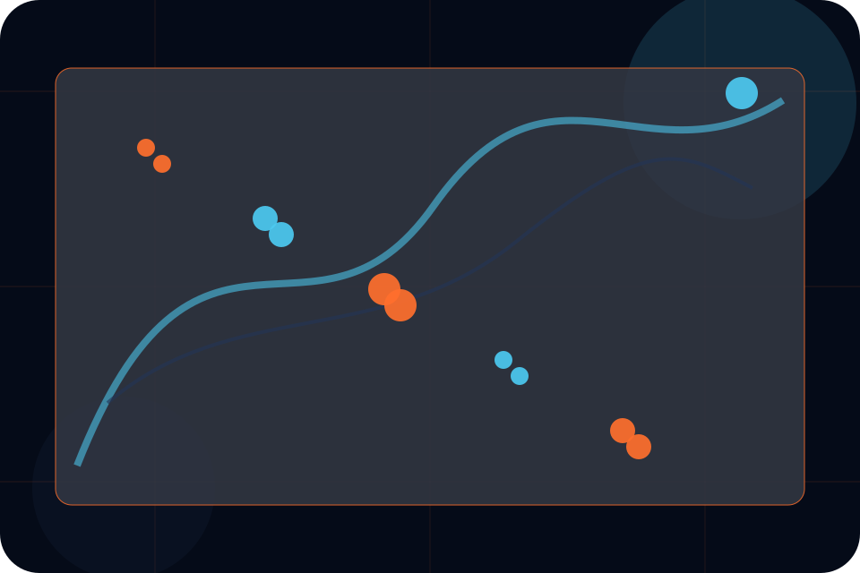
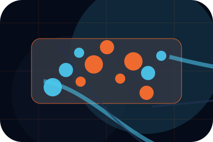
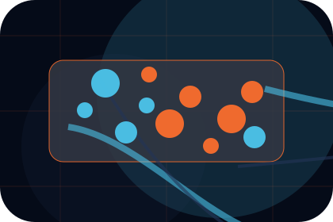
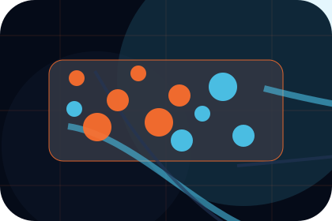
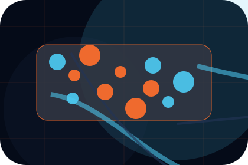
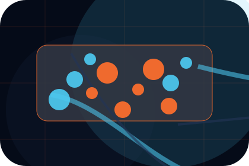
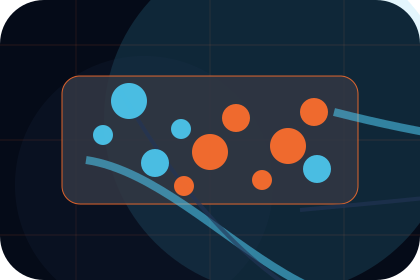
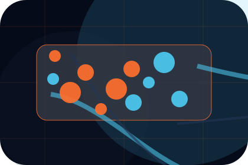
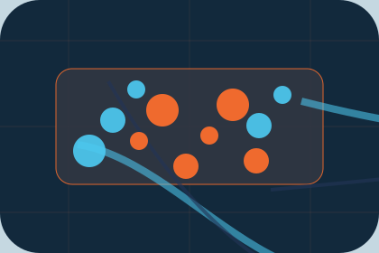

Context
Aerospace gives the page a specific angle instead of repeating the navigation label.
Projects / 01
Projects opens as a clear aviation decision hub: what Aero offers, who it helps, why it matters, and which route to take first.
The first screen combines positioning, proof, primary action, and fast internal navigation, so people can act immediately or compare the rest of the projects route with context.
Aerospace velocity hero
Select the closest route and Aero keeps the next step, proof, and follow-up expectation aligned with safety and premium reliability.

Projects / 02
Aerospace adds dark context to the projects route, using the supersonic operations deck structure to support safety and premium reliability before visitors choose a next step.
Aero uses fleet specification cards and focused copy to make the decision easier to scan, aligning the section with safety and premium reliability rather than filling space.
Explore ProjectsAerospace gives the page a specific angle instead of repeating the navigation label.
The fleet specification cards show what to compare, what to avoid, and what matters most for aviation, aerospace & air services visitors.
The final cue points to a useful internal route so the section keeps the journey moving.
Projects / 03
Engineering adds dark context to the projects route, using the supersonic operations deck structure to support safety and premium reliability before visitors choose a next step.
Aero uses fleet specification cards and focused copy to make the decision easier to scan, aligning the section with safety and premium reliability rather than filling space.
Explore Projects
Engineering gives the page a specific angle instead of repeating the navigation label.

The fleet specification cards show what to compare, what to avoid, and what matters most for aviation, aerospace & air services visitors.

The final cue points to a useful internal route so the section keeps the journey moving.
Projects / 04
Logistics adds dark context to the projects route, using the supersonic operations deck structure to support safety and premium reliability before visitors choose a next step.
Aero uses fleet specification cards and focused copy to make the decision easier to scan, aligning the section with safety and premium reliability rather than filling space.
Explore ProjectsLogistics gives the page a specific angle instead of repeating the navigation label.
The fleet specification cards show what to compare, what to avoid, and what matters most for aviation, aerospace & air services visitors.

The final cue points to a useful internal route so the section keeps the journey moving.
Projects / 05
Mission adds dark context to the projects route, using the supersonic operations deck structure to support safety and premium reliability before visitors choose a next step.
Aero uses fleet specification cards and focused copy to make the decision easier to scan, aligning the section with safety and premium reliability rather than filling space.
Explore ProjectsMission gives the page a specific angle instead of repeating the navigation label.
The fleet specification cards show what to compare, what to avoid, and what matters most for aviation, aerospace & air services visitors.

The final cue points to a useful internal route so the section keeps the journey moving.
Projects / 06
Outcomes shows what changes after the work: clearer decisions, visible progress, and proof points that connect the offer to real outcomes.
The layout connects before-and-after thinking with measured outcomes, making the result easy to scan without promising what the business cannot guarantee.
Explore ProjectsAero structures outcomes around before, after, and a clear next route so visitors can compare the block quickly before they request a charter.
Request CharterProjects / 07
Notes adds dark context to the projects route, using the supersonic operations deck structure to support safety and premium reliability before visitors choose a next step.
Aero uses fleet specification cards and focused copy to make the decision easier to scan, aligning the section with safety and premium reliability rather than filling space.
Explore ProjectsNotes gives the page a specific angle instead of repeating the navigation label.

The fleet specification cards show what to compare, what to avoid, and what matters most for aviation, aerospace & air services visitors.

The final cue points to a useful internal route so the section keeps the journey moving.
Projects / 08
Metrics shows what changes after the work: clearer decisions, visible progress, and proof points that connect the offer to real outcomes.
The layout connects before-and-after thinking with measured outcomes, making the result easy to scan without promising what the business cannot guarantee.
Explore ProjectsThe uncertainty, delay, or missed opportunity visitors bring into metrics.
Projects / 09
Proof shows what changes after the work: clearer decisions, visible progress, and proof points that connect the offer to real outcomes.
The layout connects before-and-after thinking with measured outcomes, making the result easy to scan without promising what the business cannot guarantee.
Explore ProjectsThe uncertainty, delay, or missed opportunity visitors bring into proof.
The clearer, safer, or more valuable state Aero is designed to support.
The visible cue that connects proof to a believable decision, not a loose claim.
Projects / 10
Aero closes the projects route with a clear action, a quick reminder of the value, and a low-friction way to request a charter.
Visitors who are ready can use the primary action. Visitors who are still comparing can scan the section links, proof, and support routes before they request a charter.
Request CharterThe final block keeps the choice simple: act now, compare one more proof route, or send enough detail for a focused response.
Request Chartersafety and premium reliability
An aviation site with speed-led hero, aircraft spec cards, route modules, safety proof, and charter enquiry. Projects ends with a direct path to request a charter, plus enough context for visitors who still need to compare.

Request Charter